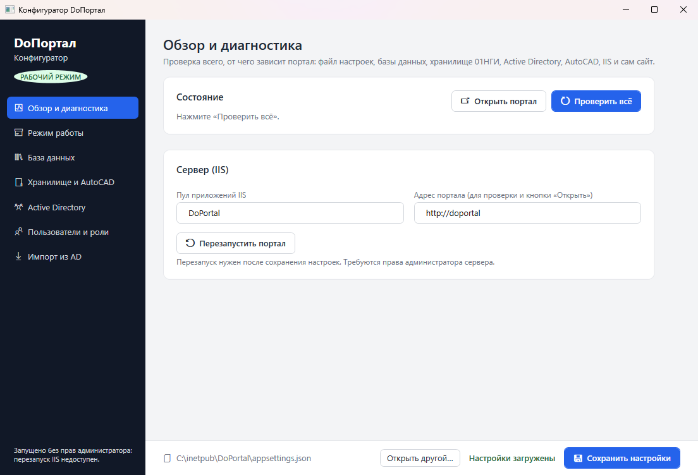
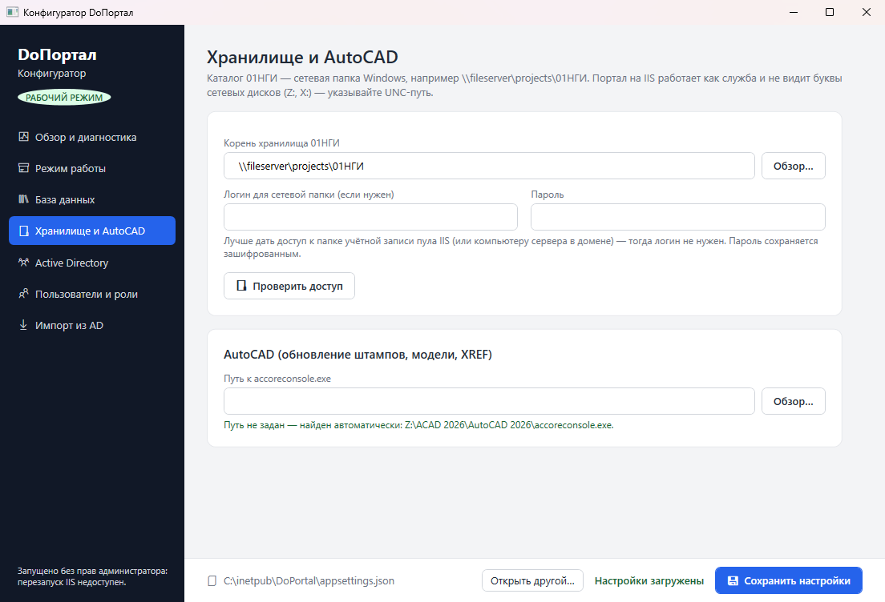
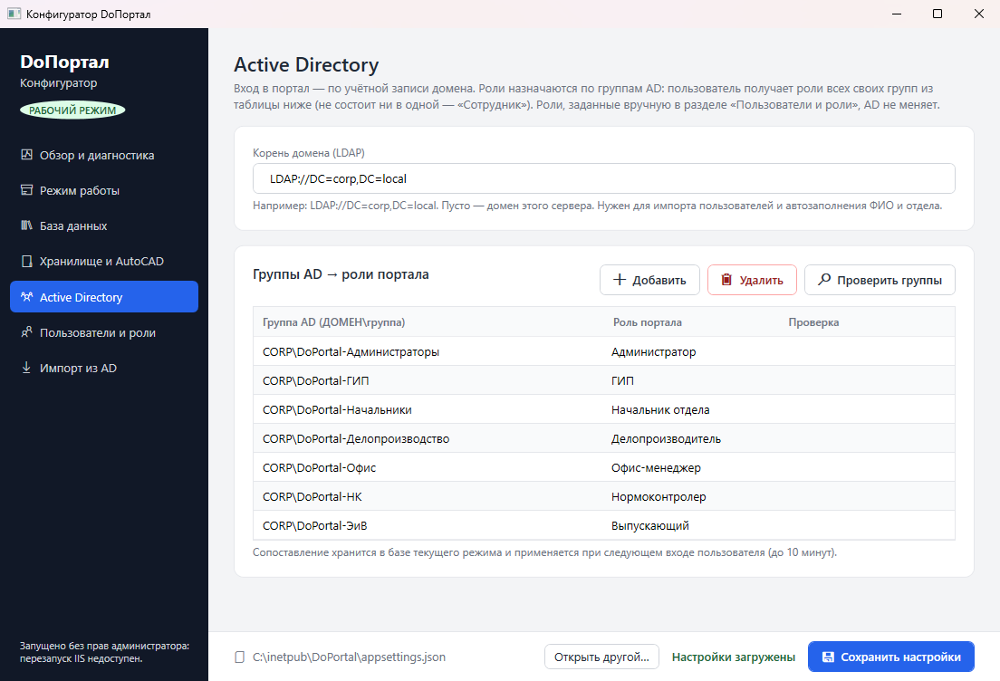
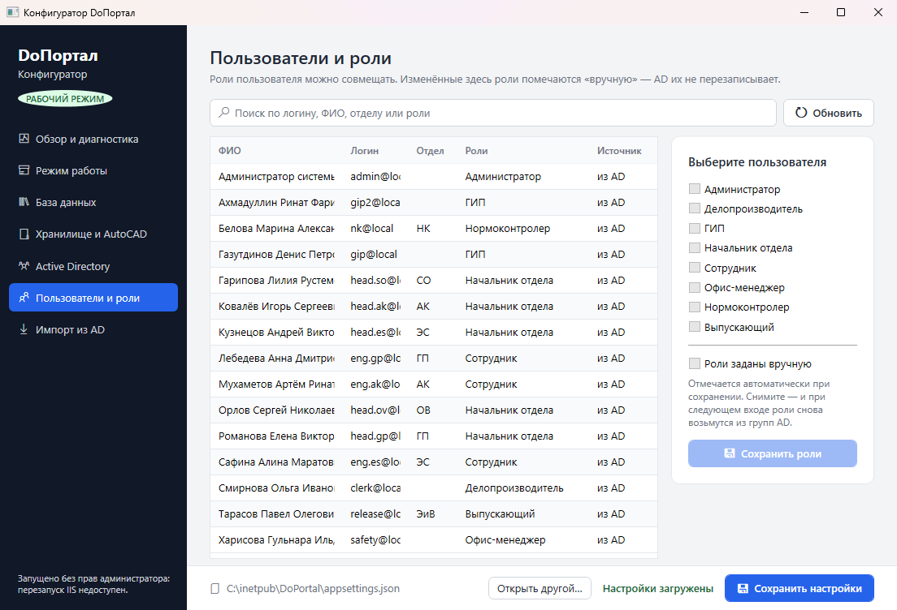
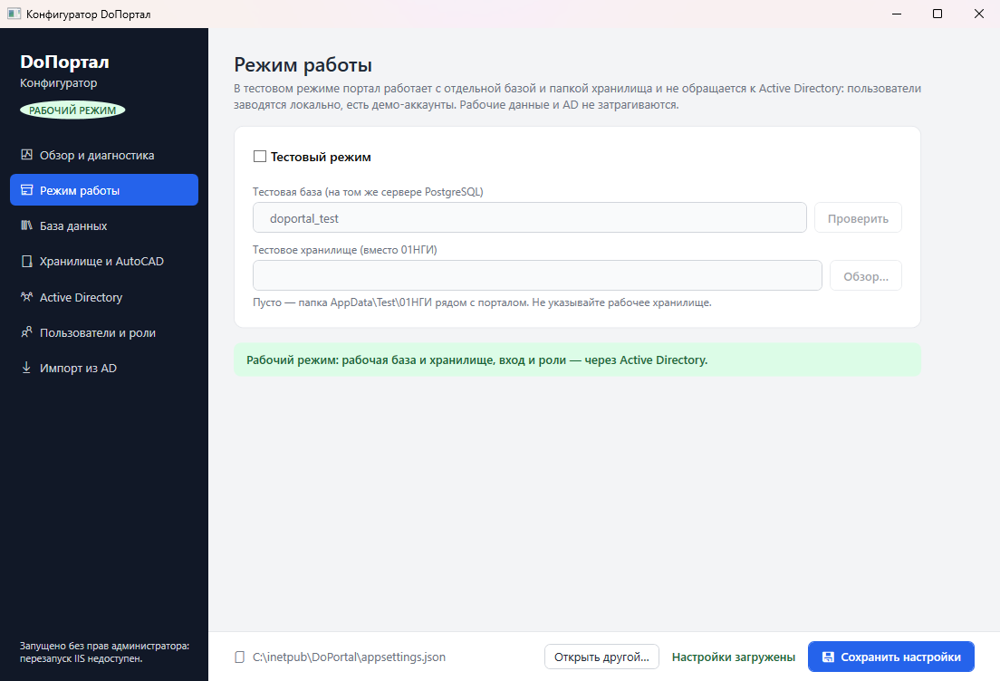

Установка и сопровождение DoПортала
Развёртывание на Windows Server 2019 и новее под IIS: база PostgreSQL, сетевое хранилище объектов, вход по доменной учётной записи и роли из групп Active Directory.
- Как устроен портал
- Требования
- Подготовка сервера
- База данных PostgreSQL
- Публикация файлов
- Сайт и пул приложений IIS
- Хранилище объектов
- Active Directory и вход без пароля
- Настройка конфигуратором
- AutoCAD на сервере
- Рабочие места
- Проверка после установки
- Резервное копирование
- Обновление версии
- Тестовый режим
- Наблюдение за работой
- Типовые неполадки
Как устроен портал
DoПортал — веб-приложение ASP.NET Core (Blazor Server) на .NET 10. Браузер держит с сервером постоянное соединение WebSocket, поэтому протокол WebSocket в IIS обязателен. Фоновые задачи (напоминания о сроках, сборка пояснительной записки, операции AutoCAD) выполняются внутри процесса портала.
C:\inetpub\DoPortal: портал, конфигуратор, AppData (вложения, подписи)Фоновые очереди, проверка сроков раз в часdoportal и doportal_testTCP 5432\\fileserver\projects\01НГИ — папки объектовSMB 445Требования
| Компонент | Требование |
|---|---|
| Сервер портала | Windows Server 2019, 2022 или 2025 в домене; подходит виртуальная машина. Рекомендуется 4 vCPU, 8 ГБ ОЗУ, 40 ГБ на системном диске плюс место под вложения. |
| Роли IIS | Веб-сервер, проверка подлинности Windows, протокол WebSocket, инициализация приложений, консоль управления. |
| .NET | ASP.NET Core 10 Hosting Bundle. Конфигуратор публикуется автономным файлом и отдельного runtime не требует. |
| СУБД | PostgreSQL 14 или новее на этом или отдельном сервере. |
| Хранилище | Общая папка Windows (SMB), доступная серверу по UNC-пути. |
| AutoCAD | Лицензионный AutoCAD 2024, 2025 или 2026 на сервере портала. Необязателен: без него не работают штампы, модели и XREF. |
| Клиенты | Microsoft Edge или Google Chrome актуальной версии. |
Сетевые доступы
| Откуда | Куда | Порт |
|---|---|---|
| Рабочие места | Сервер портала | 80 или 443 |
| Сервер портала | PostgreSQL | 5432 |
| Сервер портала, рабочие места | Файловый сервер | 445 |
| Сервер портала | Контроллеры домена | 88, 389 (и 636 при LDAPS) |
Подготовка сервера
- Установите роли IIS (PowerShell от имени администратора):
Install-WindowsFeature Web-Server, Web-Windows-Auth, Web-WebSockets, ` Web-AppInit, Web-Mgmt-Console - Скачайте с сайта Microsoft ASP.NET Core 10 Runtime — Windows Hosting Bundle, установите и перезапустите IIS:
iisreset
Порядок важенHosting Bundle ставится после ролей IIS. Если IIS добавили позже, запустите установщик Hosting Bundle ещё раз и выберите «Исправить». - Создайте DNS-запись
doportal(тип A или CNAME) на сервер портала. Сотрудники будут открыватьhttp://doportal.
База данных PostgreSQL
Портал сам создаёт и обновляет структуру базы при запуске. Нужно только завести пользователя и пустые базы.
-- psql от имени postgres CREATE ROLE doportal LOGIN PASSWORD 'надёжный-пароль'; CREATE DATABASE doportal OWNER doportal ENCODING 'UTF8'; CREATE DATABASE doportal_test OWNER doportal ENCODING 'UTF8'; -- для тестового режима
Если PostgreSQL на отдельном сервере, разрешите подключение с сервера портала в pg_hba.conf и откройте порт 5432 в брандмауэре.
Публикация файлов
Сборка на машине разработчика или сборочном сервере:
dotnet publish src/DoPortal.Web -c Release -o publish/DoPortal
dotnet publish src/DoPortal.Configurator -c Release -r win-x64 --self-contained `
-p:PublishSingleFile=true -p:IncludeNativeLibrariesForSelfExtract=true `
-o publish/DoPortal/Configurator
dotnet publish src/DoPortal.Launcher -c Release -r win-x64 --self-contained `
-p:PublishSingleFile=true -o publish/Launcher
Скопируйте publish/DoPortal на сервер в C:\inetpub\DoPortal. Должно получиться:
C:\inetpub\DoPortal\ ├─ DoPortal.Web.dll, web.config, wwwroot\ … портал ├─ AutoCAD\DoStructure.XrefPlugin.dll плагин вставки XREF ├─ Configurator\DoPortal.Configurator.exe находит ..\appsettings.json сам ├─ !Шаблоны\ запасные шаблоны ПЗ (необязательно) ├─ AppData\ создаётся порталом: вложения, подписи └─ appsettings.json настройки, правится конфигуратором
appsettings.Development.json — в нём демонстрационные настройки разработчика. Папку HeadlessCAD из репозитория разработчика тоже не переносите: это модули AutoCAD, они распространяются только по лицензии Autodesk.Сайт и пул приложений IIS
- Пул приложений и сайт (PowerShell от имени администратора):
Import-Module WebAdministration New-WebAppPool -Name DoPortal $p = 'IIS:\AppPools\DoPortal' Set-ItemProperty $p managedRuntimeVersion '' # без управляемого кода Set-ItemProperty $p processModel.loadUserProfile $true Set-ItemProperty $p processModel.idleTimeout '00:00:00' # не засыпать: фоновые задачи Set-ItemProperty $p startMode AlwaysRunning Set-ItemProperty $p recycling.periodicRestart.time '00:00:00' New-Website -Name DoPortal -PhysicalPath C:\inetpub\DoPortal ` -ApplicationPool DoPortal -Port 80 -HostHeader doportal Set-ItemProperty IIS:\Sites\DoPortal applicationDefaults.preloadEnabled $true
- Проверка подлинности: Windows — включить, анонимная — выключить.
$f = 'system.webServer/security/authentication' Set-WebConfigurationProperty -PSPath IIS:\ -Location DoPortal ` -Filter "$f/windowsAuthentication" -Name enabled -Value $true Set-WebConfigurationProperty -PSPath IIS:\ -Location DoPortal ` -Filter "$f/anonymousAuthentication" -Name enabled -Value $false - Удостоверение пула. Рекомендуется доменная служебная учётная запись, например
CORP\svc-doportal: ей проще выдать права на хранилище и базу.Set-ItemProperty $p processModel -Value @{ identityType = 'SpecificUser'; userName = 'CORP\svc-doportal'; password = '…' }Если оставить
ApplicationPoolIdentity, к сетевым ресурсам портал обращается от имени компьютера сервераCORP\ИМЯСЕРВЕРА$. - Права на данные портала:
icacls C:\inetpub\DoPortal\AppData /grant "CORP\svc-doportal:(OI)(CI)M" icacls C:\inetpub\DoPortal\appsettings.json /grant "CORP\svc-doportal:R"
- Для HTTPS добавьте привязку 443 с сертификатом организации и при желании перенаправление с HTTP.
Хранилище объектов \\fileserver\projects\01НГИ
- Портал в IIS работает как служба и не видит буквы сетевых дисков (Z:, X:). Указывайте только UNC-путь.
- Удостоверению пула нужны права «Изменение» и на общий ресурс, и в NTFS. На файловом сервере:
Grant-SmbShareAccess -Name projects -AccountName 'CORP\svc-doportal' -AccessRight Change -Force icacls "D:\Shares\projects\01НГИ" /grant "CORP\svc-doportal:(OI)(CI)M" # локальный путь папки на файловом сервере - Если выдать права учётной записи пула нельзя, в конфигураторе задаются логин и пароль для сетевой папки. Пароль хранится зашифрованным.
- Сотрудники работают с файлами со своих компьютеров по тому же пути: права пользователей на 01НГИ остаются как есть.
Active Directory и вход без пароля
Группы ролей
$ou = 'OU=Groups,DC=corp,DC=local'
'Администраторы','ГИП','Начальники','Делопроизводство','Офис','НК','ЭиВ' | ForEach-Object {
New-ADGroup -Name "DoPortal-$_" -GroupScope Global -GroupCategory Security -Path $ou }
Add-ADGroupMember 'DoPortal-ГИП' -Members ivanov.ii, petrov.pp
| Группа | Роль портала |
|---|---|
CORP\DoPortal-Администраторы | Администратор |
CORP\DoPortal-ГИП | ГИП |
CORP\DoPortal-Начальники | Начальник отдела |
CORP\DoPortal-Делопроизводство | Делопроизводитель |
CORP\DoPortal-Офис | Офис-менеджер |
CORP\DoPortal-НК | Нормоконтролер |
CORP\DoPortal-ЭиВ | Выпускающий |
- Сотрудник получает роли всех своих групп. Если он не состоит ни в одной группе из таблицы, ему назначается роль «Сотрудник».
- Учётная запись в портале создаётся при первом входе: ФИО и отдел берутся из AD.
- Роли сверяются при входе и кешируются до 10 минут.
- Если роли человека изменили вручную в конфигураторе, AD их больше не меняет, пока не снять отметку «Роли заданы вручную».
Чтобы браузер не спрашивал пароль
- Групповой политикой добавьте
http://doportalв зону «Местная интрасеть» (Конфигурация компьютера → Административные шаблоны → Компоненты Windows → Internet Explorer → Панель управления браузером → Безопасность → Список назначений зон для веб-сайтов, значение1). - Для Edge и Chrome дополнительно задайте политику
AuthServerAllowlist=doportal,doportal.corp.local. - Открывайте портал по имени, а не по IP-адресу: по IP вход по Kerberos невозможен.
- Если пул работает от доменной учётной записи и нужен Kerberos по полному имени, зарегистрируйте SPN и включите
useAppPoolCredentials:setspn -S HTTP/doportal CORP\svc-doportal setspn -S HTTP/doportal.corp.local CORP\svc-doportal Set-WebConfigurationProperty -PSPath IIS:\ -Location DoPortal ` -Filter "$f/windowsAuthentication" -Name useAppPoolCredentials -Value $true
Настройка конфигуратором
Запустите C:\inetpub\DoPortal\Configurator\DoPortal.Configurator.exe на сервере портала от имени администратора. Пароли в appsettings.json шифруются ключом этого сервера (DPAPI): сохранённый на другом компьютере файл здесь не расшифруется.
- База данных — сервер, порт, база
doportal, пользователь и пароль → «Проверить подключение». - Хранилище и AutoCAD — корень
\\fileserver\projects\01НГИ→ «Проверить доступ». Путь к AutoCAD можно оставить пустым, если AutoCAD установлен в стандартную папку. - Active Directory — корень домена
LDAP://DC=corp,DC=local, таблица «Группа AD → роль» → «Проверить группы». - Сохранить настройки, затем на вкладке «Обзор и диагностика» → «Проверить всё» → «Перезапустить портал».
- По желанию — Импорт из AD: заводит всех активных сотрудников заранее, с отделами и ролями по группам. Роль «Администратор» при импорте не выдаётся.
- В портале под администратором заполните справочники: отделы с руководителем и ВРИО, заказчики, месторождения, типы объектов с шаблонами папок, праздники, шаблоны документов.




AutoCAD на сервере
- Обновление штампов, создание моделей и обвязка XREF выполняются консольным модулем
accoreconsole.exeиз установленного AutoCAD 2024–2026. - Портал ищет его в
C:\Program Files\Autodesk\AutoCAD 20xx. Другой путь задаётся в конфигураторе, раздел «Хранилище и AutoCAD». - Плагин вставки XREF
AutoCAD\DoStructure.XrefPlugin.dllвходит в поставку портала и подключается автоматически. - Одновременно выполняется не больше двух операций AutoCAD, остальные ждут в очереди.
Рабочие места
Кнопки «Открыть в AutoCAD / Word / проводнике» используют протокол doportal://. На каждый компьютер (удобно групповой политикой или SCCM):
- Скопируйте
DoPortal.Launcher.exeизpublish/LauncherвC:\DoPortal\. - Импортируйте
src\DoPortal.Launcher\install_protocol.reg, или распространите ключHKEY_CLASSES_ROOT\doportalполитикой реестра.
Если сотрудники обращаются к хранилищу по-разному (буква диска, старое имя сервера, IP-адрес), перечислите эти варианты в C:\DoPortal\roots.txt, по одному в строке. Модуль запуска будет подставлять их, если файл не открывается по основному пути. Для самого портала те же варианты задаются в appsettings.json: "Portal": { "NgiRootAliases": [ "Z:\\01НГИ" ] }.
Без модуля запуска портал работает полностью, недоступно только открытие файлов одной кнопкой.
Проверка после установки
- Конфигуратор → «Проверить всё»: все пункты зелёные.
http://doportalс рабочего места открывается без запроса пароля, в правом верхнем углу инициалы сотрудника.- Сотрудник из группы
DoPortal-ГИПвидит «Объекты» и «Задачи», сотрудник без групп — только свои разделы. - Создание тестового объекта: папки появляются в
\\fileserver\projects\01НГИ. - Загрузка вложения к письму и его скачивание.
- Кнопка «Обновить штампы AutoCAD» на объекте завершается без ошибки (при установленном AutoCAD).
- Через 25 минут простоя портал отвечает сразу, без долгой первой загрузки.
Резервное копирование
Сохраняйте три вещи: базу данных, папку AppData (вложения и сканы подписей) и appsettings.json. Каталог 01НГИ копируется вашими обычными средствами файлового сервера.
# C:\Scripts\doportal-backup.ps1 — ежедневно через Планировщик заданий $d = Get-Date -Format 'yyyy-MM-dd' $dst = 'D:\Backup\DoPortal' $env:PGPASSFILE = 'C:\Scripts\pgpass.conf' # localhost:5432:doportal:doportal:пароль & 'C:\Program Files\PostgreSQL\16\bin\pg_dump.exe' -h localhost -U doportal -F c ` -f "$dst\doportal-$d.dump" doportal robocopy C:\inetpub\DoPortal\AppData "$dst\AppData" /MIR /R:1 /W:1 | Out-Null Copy-Item C:\inetpub\DoPortal\appsettings.json "$dst\appsettings-$d.json" Get-ChildItem $dst -Filter 'doportal-*.dump' | Where-Object LastWriteTime -lt (Get-Date).AddDays(-14) | Remove-Item
Восстановление базы: pg_restore -h localhost -U doportal -d doportal --clean doportal-ГГГГ-ММ-ДД.dump.
appsettings.json зашифрованы ключом старого сервера. После переноса откройте конфигуратор на новом сервере, введите пароли базы и сетевой папки заново и сохраните.Обновление версии
- Сделайте резервную копию базы.
- Положите файл
app_offline.htmвC:\inetpub\DoPortal: портал покажет страницу обслуживания и освободит файлы. - Скопируйте новую публикацию поверх, кроме
appsettings.jsonи папкиAppData. - Удалите
app_offline.htm. Изменения структуры базы применятся при первом запуске. - Конфигуратор → «Проверить всё».
Обновление удобно сначала проверить в тестовом режиме на копии базы.
Тестовый режим
Конфигуратор → «Режим работы» → «Тестовый режим». Портал переключается на отдельную базу (doportal_test) и отдельную папку хранилища, не обращается к AD и заводит пользователей локально. На каждой странице видна полоса «Тестовый режим». Используйте его для обучения и проверки обновлений; для возврата снимите флажок, сохраните и перезапустите портал.

Наблюдение за работой
| Где смотреть | Что там |
|---|---|
/admin/audit | Журнал администрирования: изменения ролей, настроек, импорт из AD. Только для администраторов. |
/hangfire | Фоновые задачи: сборка ПЗ, операции AutoCAD, ошибки и повторы. Только для администраторов. |
| Журнал Windows «Приложение» | Ошибки запуска модуля ASP.NET Core (источник «IIS AspNetCore Module V2»). |
C:\inetpub\DoPortal\logs | Подробный вывод портала. Включается в web.config: stdoutLogEnabled="true"; после разбора проблемы выключите. |
Типовые неполадки
| Признак | Причина и решение |
|---|---|
| HTTP 500.19 | Не установлен Hosting Bundle или он поставлен до IIS. Переустановите Hosting Bundle, выполните iisreset. |
| HTTP 500.30 при запуске | Портал не стартовал. Чаще всего недоступна база или неверный пароль, либо appsettings.json сохранён на другом сервере и пароль не расшифровывается. Проверьте журнал «Приложение», пересохраните настройки конфигуратором. |
| Браузер спрашивает логин и пароль | Сайт не в зоне «Местная интрасеть», включена анонимная проверка подлинности или портал открыт по IP. См. раздел 08. |
| HTTP 401 | Выключена проверка подлинности Windows на сайте. |
| Страница постоянно переподключается | Не установлен протокол WebSocket в IIS или соединение режет прокси. Установите Web-WebSockets, добавьте портал в исключения прокси. |
| Папки объектов не создаются, «Доступ запрещён» | У удостоверения пула нет прав на \\fileserver\projects\01НГИ, либо в настройках указана буква диска вместо UNC-пути. Конфигуратор → «Проверить доступ». |
| Роли из AD не применились | Подождите до 10 минут или перезапустите пул; проверьте, что группа есть в сопоставлении и что у пользователя не стоит отметка «Роли заданы вручную». В тестовом режиме AD не используется. |
| Не обновляются штампы, не создаются модели | AutoCAD не найден или не активирована лицензия. Конфигуратор → «Проверить всё», пункт AutoCAD. |
| Нет утренних напоминаний, первый вход долгий | Пул засыпает. Проверьте idleTimeout = 0, startMode = AlwaysRunning, preloadEnabled = true (раздел 06). |
| Кнопка «Открыть в AutoCAD» ничего не делает | На рабочем месте не установлен модуль запуска или не импортирован install_protocol.reg. |